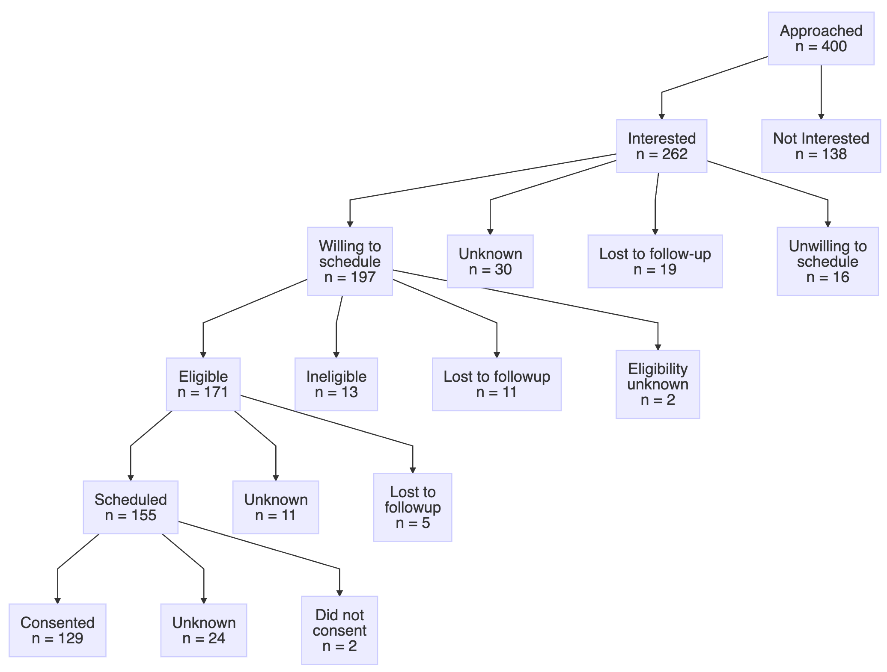

participantFlowDiagram is an R package that helps a study team find issues in the progress of study participants through a research protocol by graphically presenting summary data of their progress.
If you provide it a dataframe of factors that describe each step in the workflows of a study, it can generate graphs like this:

Example diagram
Installation
You can install the development version of participantFlowDiagram from GitHub with:
# install.packages("pak")
pak::pak("ctsit/participantFlowDiagram")Example
Here’s the most basic example of using participantFlowDiagram:
library(participantFlowDiagram)
consent_tracking_data <- readr::read_csv("vignettes/articles/consent_tracking_data.csv") |>
dplyr::mutate(dplyr::across(dplyr::everything(), as.factor))
steps <- dplyr::tribble(
~parent, ~child,
"Approached", "interest",
"interest_yes", "eligibility_scheduling",
"eligibility_scheduling_willing", "eligibility",
"eligibility_yes", "consent_scheduling",
"consent_scheduling_yes", "consent"
)
pretty_labels <- get_pretty_labels_template(
participant_level_progress = consent_tracking_data,
parents = steps$parent,
children = steps$child
)
create_mermaid_diagram(
participant_level_progress = consent_tracking_data,
parents = steps$parent,
children = steps$child,
pretty_labels = pretty_labels)For more details, see Getting Started